금융 브랜드 231
은행·보험·카드·결제·자산운용, 그리고 부동산 투자처럼 돈의 흐름을 다루는 금융 브랜드를 모았습니다. 브랜드 아틀라스에 수록된 금융 브랜드 231개를 로고와 함께 모았습니다. 각 항목은 설립 배경, 브랜드 아이덴티티, 로고 변천, 제품과 서비스, 현재 상태를 정리한 상세 페이지로 이어집니다.
다른 산업 보기
기원 국가가 확인된 브랜드는 197개이며 미국 109개, 한국 24개, 영국 16개, 일본 7개, 캐나다 6개 순으로 많습니다. 설립연도가 확인된 브랜드는 210개이며 가장 오래된 곳은 1804년, 가장 최근은 2021년에 시작했습니다. 시기별로는 1900년 이전 47개, 1900~1949년 22개, 1950~1999년 92개, 2000년 이후 49개입니다. 수록 자료로는 로고 이미지 222개, 로고 변천 자료 10개, 연혁 타임라인 34개를 갖췄습니다. 이 가운데 192개는 공식 웹사이트가 일치하는 위키데이터 개체로 연결해 두었습니다.
금융 브랜드 목록
품질 점수 순 상위는 로고 타일로, 나머지는 가나다순 목록으로 보입니다.
 페이팔Paypal미국 · 1998년
페이팔Paypal미국 · 1998년페이팔은 1998년 미국에서 출발해 온라인 송금과 결제를 대중화한 핀테크 기업으로, 이베이 거래의 표준 결제 수단으로 성장한 뒤 독립 상장해…
 헌팅턴 뱅크Huntington Bank미국 · 1866년
헌팅턴 뱅크Huntington Bank미국 · 1866년헌팅턴 뱅크(The Huntington National Bank)는 미국 오하이오주 컬럼버스에 본사를 둔 지역 은행으로, 1866년 설립되어…
 로이즈Lloyds영국
로이즈Lloyds영국로이즈(Lloyds)는 검은 말 심볼로 잘 알려진 영국의 대형 소매은행으로, 로이즈 뱅킹 그룹(Lloyds Banking Group)에 속한다.
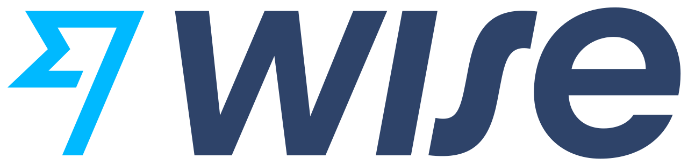
와이즈Wise영국 · 2011년와이즈(Wise)는 2011년 에스토니아 출신 크리스토 캐르만과 타베트 힌리쿠스가 영국 런던에서 창업한 핀테크로, 출범 당시 사명은…
 로빈후드Robinhood2013년
로빈후드Robinhood2013년로빈후드(Robinhood Markets)는 2013년 블라디미르 테네브와 바이주 바트가 설립한 미국 핀테크 기업으로, 수수료…
 비자Visa미국 · 1958년
비자Visa미국 · 1958년비자는 전 세계 카드 결제를 중계하는 미국의 결제 네트워크 기업이다.
 코인베이스Coinbase미국 · 2012년
코인베이스Coinbase미국 · 2012년코인베이스(Coinbase)는 2012년 미국 샌프란시스코에서 설립된 암호화폐 거래 플랫폼으로, 비트코인을 비롯한 디지털 자산을 일반 사용자가…
 토스Toss
토스Toss토스(Toss)는 비바리퍼블리카가 운영하는, 간편 송금을 시작으로 결제·대출·증권·보험을 아우르는 모바일 종합 금융 슈퍼앱이다.
 네이션와이드 빌딩 소사이어티Nationwide
네이션와이드 빌딩 소사이어티Nationwide네이션와이드 빌딩 소사이어티(Nationwide Building Society)는 영국 최대의 빌딩 소사이어티로, 주주가 아닌 회원(예금·대출…
 마스터카드Mastercard1966년
마스터카드Mastercard1966년마스터카드는 1966년 미국 은행들이 결성한 인터뱅크 카드 협회에서 출발한 글로벌 결제 네트워크다.
 몬조Monzo2015년
몬조Monzo2015년몬조(Monzo)는 영국의 디지털 네오뱅크로, 물리적 지점 없이 스마트폰 앱만으로 운영되는 모바일 우선 은행이다.
 페이세이프Paysafe영국
페이세이프Paysafe영국페이세이프(Paysafe)는 영국에 본사를 둔 다국적 온라인 결제·디지털 지갑 기업이다.
 씨티Citibank1812년
씨티Citibank1812년씨티(Citi)는 미국 씨티그룹이 운영하는 글로벌 소비자·기업 금융 브랜드로, 1812년 뉴욕에서 출발한 시티뱅크 오브 뉴욕을 뿌리로 한다.
 애프터페이Afterpay호주 · 2014년
애프터페이Afterpay호주 · 2014년애프터페이(Afterpay)는 호주에서 출발한 후불결제(BNPL, Buy Now Pay Later) 서비스로, 소비자가 상품을 즉시 구매한 뒤…
 홍콩상하이은행HongkongBank1865년
홍콩상하이은행HongkongBank1865년홍콩상하이은행(HongkongBank, Hongkong and Shanghai Banking Corporation)은 1865년 토머스…
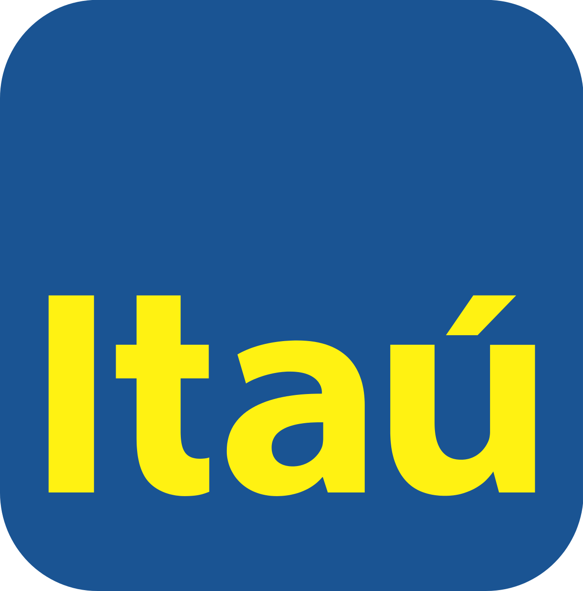
이타우Banco Itaú1945년이타우(Itaú)는 브라질을 대표하는 민간 은행으로, 1945년 상파울루에서 영업을 시작해 2008년 우니방쿠와 합병하며 이타우 우니방쿠로…
 한국씨티은행Citibank Korea한국 · 1983년
한국씨티은행Citibank Korea한국 · 1983년한국씨티은행(Citibank Korea)은 미국 씨티그룹이 지배하는 대한민국의 외국계 시중은행이다.
 IBK기업은행Industrial Bank of Korea한국 · 1961년
IBK기업은행Industrial Bank of Korea한국 · 1961년IBK기업은행(Industrial Bank of Korea)은 중소기업 금융 지원을 목적으로 중소기업은행법에 따라 설립된 대한민국의 국책…
 우리은행Woori Bank한국 · 1899년
우리은행Woori Bank한국 · 1899년우리은행(Woori Bank)은 우리금융지주 산하의 대한민국 시중은행이다.
 가와사키 신용금고Kawasaki Shinkin Bank
가와사키 신용금고Kawasaki Shinkin Bank가와사키 신용금고(川崎信用金庫)는 일본 가와사키시의 신용금고다.
 레이먼드 제임스Raymond James Financial미국 · 1962년
레이먼드 제임스Raymond James Financial미국 · 1962년레이먼드 제임스(Raymond James Financial)는 미국의 투자은행이자 증권회사로, 글로벌 투자은행업·증권업·투자경영과 인수합병…
 윌리스 타워스 왓슨Willis Towers Watson미국 · 2016년
윌리스 타워스 왓슨Willis Towers Watson미국 · 2016년윌리스 타워스 왓슨(Willis Towers Watson)은 WTW로 브랜드화한 영국·미국계 다국적 자문·중개·솔루션 기업이다.
 카카오뱅크KakaoBank한국 · 2016년
카카오뱅크KakaoBank한국 · 2016년카카오뱅크(KakaoBank)는 카카오 계열의 인터넷전문은행으로, 2016년 법인 설립 후 2017년 서비스를 시작했다.
 ING 그룹ING Group네덜란드 · 1991년
ING 그룹ING Group네덜란드 · 1991년ING 그룹(ING Group)은 암스테르담에 본사를 둔 네덜란드의 다국적 은행·금융 서비스 기업이다.
 자비스앤빌런즈Jobis and Villains한국 · 2015년
자비스앤빌런즈Jobis and Villains한국 · 2015년자비스앤빌런즈는 세금 환급 플랫폼 삼쩜삼을 운영하는 한국의 핀테크 스타트업이다.
 스위스리Swiss Re스위스 · 1863년
스위스리Swiss Re스위스 · 1863년스위스리(Swiss Re)는 1863년 스위스 취리히에서 설립된 재보험 회사이다.
 유럽 부흥 개발 은행European Bank for Reconstruction and Development영국 · 1991년
유럽 부흥 개발 은행European Bank for Reconstruction and Development영국 · 1991년유럽 부흥 개발 은행(European Bank for Reconstruction and Development)은 동구권과 소련의 붕괴 이후…
 노무라 홀딩스Nomura Holdings일본 · 1925년
노무라 홀딩스Nomura Holdings일본 · 1925년노무라 홀딩스(Nomura Holdings)는 일본의 금융 지주회사이다.
 스테이트 스트리트 코퍼레이션State Street Corporation미국
스테이트 스트리트 코퍼레이션State Street Corporation미국스테이트 스트리트 코퍼레이션(State Street Corporation)은 미국 보스턴 One Congress Street에 본사를 둔…
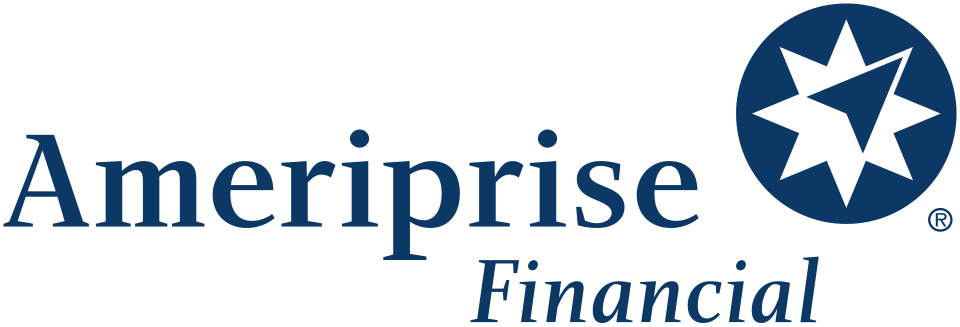
아메리프라이즈 파이낸셜Ameriprise Financial미국 · 1894년아메리프라이즈 파이낸셜(Ameriprise Financial)은 미국 미니애폴리스에 본사를 둔 종합 금융서비스 회사이자 은행 지주회사이다.
 두나무Dunamu한국 · 2012년
두나무Dunamu한국 · 2012년두나무(Dunamu)는 한국 1위 암호화폐 거래소 업비트(Upbit)를 운영하는 핀테크·블록체인 기업으로, 2012년 송치형이 창업했다.
 리소나 홀딩스Resona Holdings일본 · 2001년
리소나 홀딩스Resona Holdings일본 · 2001년리소나 홀딩스(Resona Holdings)는 일본 도쿄 고토구에 본사를 둔 은행 지주회사이다.
 인테사 상파울로Gruppo Intesa Sanpaolo이탈리아 · 2007년
인테사 상파울로Gruppo Intesa Sanpaolo이탈리아 · 2007년인테사 상파울로(Gruppo Intesa Sanpaolo)는 이탈리아의 국제 은행 그룹이다.
 스탠더드 앤드 푸어스S&P Global Ratings1941년
스탠더드 앤드 푸어스S&P Global Ratings1941년스탠더드 앤드 푸어스(S&P Global Ratings)는 기업, 정부, 구조화금융 상품이 발행한 채무에 대한 신용등급을 발표하는 미국의…
 중국공상은행Industrial and Commercial Bank of China중국 · 1984년
중국공상은행Industrial and Commercial Bank of China중국 · 1984년중국공상은행(Industrial and Commercial Bank of China)은 베이징시에 본사를 둔 중국의 부분 국유 다국적…
 캐나다 임페리얼 상업은행Canadian Imperial Bank of Commerce캐나다 · 1961년
캐나다 임페리얼 상업은행Canadian Imperial Bank of Commerce캐나다 · 1961년캐나다 임페리얼 상업은행(Canadian Imperial Bank of Commerce)은 토론토 금융지구의 CIBC Square에 본사를 둔…
 푸르덴셜 파이낸셜Prudential Financial미국 · 1875년
푸르덴셜 파이낸셜Prudential Financial미국 · 1875년푸르덴셜 파이낸셜(Prudential Financial)은 미국의 개인 및 기관 고객에게 보험, 은퇴 설계, 투자 관리와 기타 금융…
 알리안츠Allianz SE독일 · 1890년
알리안츠Allianz SE독일 · 1890년알리안츠(Allianz SE)는 독일 뮌헨에 본사를 둔 다국적 금융 서비스 기업이다.
 크레디 아그리콜Credit Agricole Group프랑스 · 2000년
크레디 아그리콜Credit Agricole Group프랑스 · 2000년크레디 아그리콜(Crédit Agricole Group)은 프랑스의 국제 은행 그룹이자 세계 최대의 협동조합형 금융기관이다.
 RBC 은행Royal Bank of Canada캐나다 · 1864년
RBC 은행Royal Bank of Canada캐나다 · 1864년RBC 은행(Royal Bank of Canada)은 캐나다의 다국적 금융 서비스 기업이다.
 인터콘티넨털 익스체인지Intercontinental Exchange미국 · 2000년
인터콘티넨털 익스체인지Intercontinental Exchange미국 · 2000년인터콘티넨털 익스체인지(Intercontinental Exchange)는 미국 애틀랜타에 본사를 둔 다국적 금융서비스 회사로, 글로벌 금융…
 S&P 글로벌S&P Global미국
S&P 글로벌S&P Global미국S&P 글로벌(S&P Global)은 미국 뉴욕에 본사를 둔 공개 금융 서비스 기업이다.
 카카오페이Kakao Pay2014년
카카오페이Kakao Pay2014년카카오페이(Kakao Pay)는 카카오 계열의 모바일 간편결제·디지털 금융 기업으로, 2014년 서비스 시작 후 2017년 분사했다.
미츠이 스미토모 파이낸셜 그룹Sumitomo Mitsui Financial Group일본 · 2002년미츠이 스미토모 파이낸셜 그룹(Sumitomo Mitsui Financial Group)은 일본의 다국적 금융 서비스 그룹이자 지주회사이다.
 글로벌페이먼츠Global Payments미국 · 2000년
글로벌페이먼츠Global Payments미국 · 2000년글로벌페이먼츠(Global Payments)는 가맹점, 카드 발급사, 소비자에게 결제 기술을 제공하는 미국의 다국적 금융기술 기업이다.
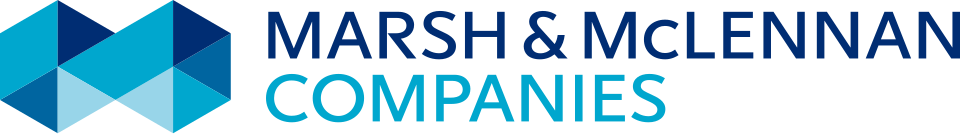
마시 맥레넌 컴퍼니Marsh & McLennan Companies미국 · 1905년마시 맥레넌 컴퍼니(Marsh & McLennan Companies)는 보험 중개, 위험 관리, 재보험, 인재 관리, 투자 자문, 경영…
 스퀘어 (회사)Block, Inc.미국 · 2009년
스퀘어 (회사)Block, Inc.미국 · 2009년스퀘어 (회사)(Block, Inc.)는 소비자와 판매자에게 기술 및 금융 서비스를 제공하는 미국 회사이다.
 아폴로 글로벌 매니지먼트Apollo Global Management미국 · 1990년
아폴로 글로벌 매니지먼트Apollo Global Management미국 · 1990년아폴로 글로벌 매니지먼트(Apollo Global Management)는 신용·사모펀드·실물자산을 중심으로 대체자산에 투자하며 기관과 개인의…
전체 목록
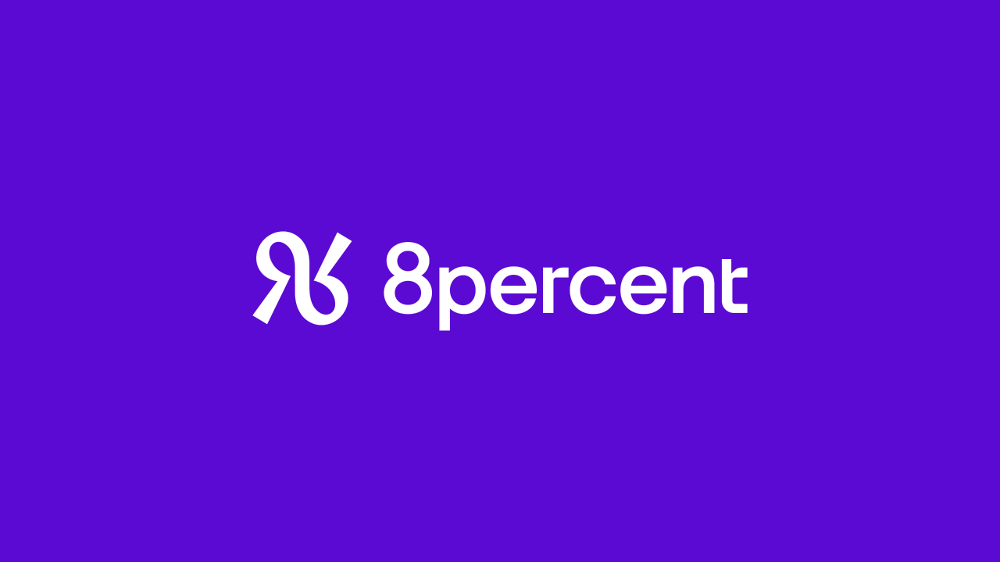
8퍼센트 8Percent중금리 대안금융을 표방한 국내 초기 P2P 대출 플랫폼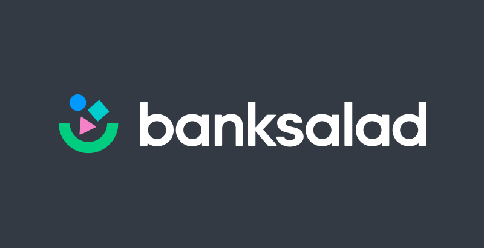
뱅크샐러드 Banksalad흩어진 내 금융 데이터를 한곳에 모은 자산관리 앱버크셔 해서웨이 Berkshire Hathaway버크셔 해서웨이(Berkshire Hathaway Inc.)는 워렌 버핏의 투자목적 지주회사이다.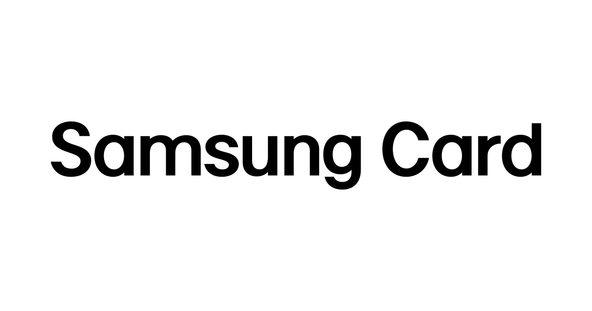
삼성카드 Samsung Card삼성그룹 계열의 대형 신용카드 전문회사서울보증보험 Seoul Guarantee Insurance Company서울보증보험(Seoul Guarantee Insurance Company)은 대한민국에서 거래상 신용위험을 보험 형태로 인수하는 종합보증기관이다.센드웨이브 Sendwave센드웨이브(Sendwave)는 2014년 설립된 모바일 우선 국제 송금 앱이다.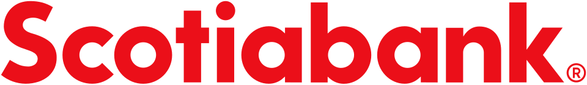
스코샤 은행 Scotiabank스코샤 은행(Scotiabank)은 캐나다의 금융회사로, 정식 명칭은 노바 스코샤 은행(The Bank of Nova Scotia)이다.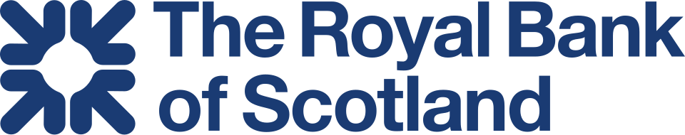
스코틀랜드 왕립은행 The Royal Bank of Scotland스코틀랜드 왕립은행(The Royal Bank of Scotland)은 스코틀랜드 에든버러에 본사를 둔 영국의 대형 소매·기업 은행이다.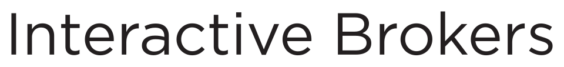
인터랙티브 브로커스 Interactive Brokers인터랙티브 브로커스(Interactive Brokers)는 미국 그리니치에 본사를 두고 전자거래 플랫폼과 글로벌 중개 서비스를 운영하는 다국적 중개 회사이다.잉글랜드 은행 Bank of England잉글랜드 은행(Bank of England)은 1694년 설립된 영국의 중앙은행이다.중국건설은행 China Construction Bank중국건설은행(China Construction Bank)은 중국 베이징에 본사를 둔 부분 국유 다국적 은행·금융 서비스 기업이다.중국농업은행 Agricultural Bank of China중국농업은행(Agricultural Bank of China)은 베이징에 본사를 둔, 대부분 국가가 소유한 중국의 다국적 은행이자 금융 서비스 기업이다.중국은행 Bank of China중국은행(Bank of China)은 중화인민공화국 베이징에 본점을 두고 있는 국영상업은행이며 중국 최초의 은행이다.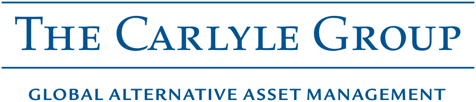
칼라일 그룹 Carlyle Group칼라일 그룹(Carlyle Group)은 1987년에 설립된 미국의 사모펀드 운용사이다.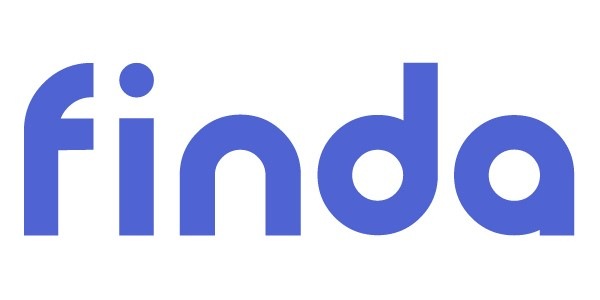
핀다 Finda여러 금융사 대출 상품을 한 번에 비교하는 핀테크 플랫폼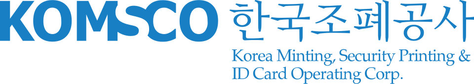
한국조폐공사 Korea Minting and Security Printing Corporation한국조폐공사(Korea Minting and Security Printing Corporation)는 은행권·주화·국채·공채·각종 유가증권과 정부·지방자치단체…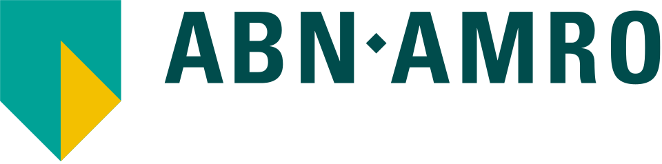
ABN AMROABN AMRO는 암스테르담에 본사를 둔 네덜란드의 은행이다.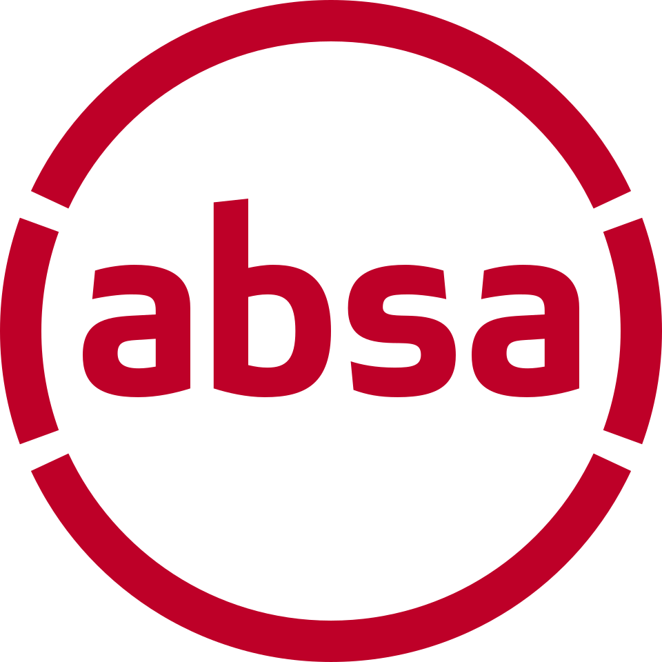
ABSA Group LimitedABSA Group Limited는 남아프리카공화국 요하네스버그에 본사를 둔 다국적 은행·금융서비스 그룹이다.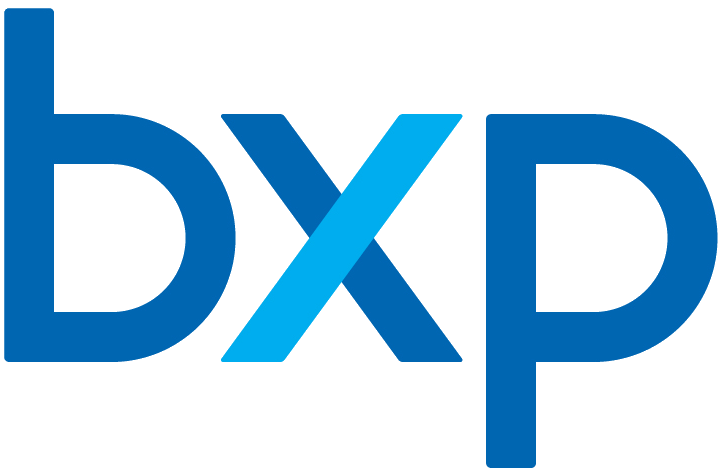
Boston PropertiesBoston Properties는 미국의 상장 부동산투자신탁으로, 주요 도시의 업무용 부동산에 투자하고 상업용 자산을 보유하거나 지분 형태로 운용하는 회사이다.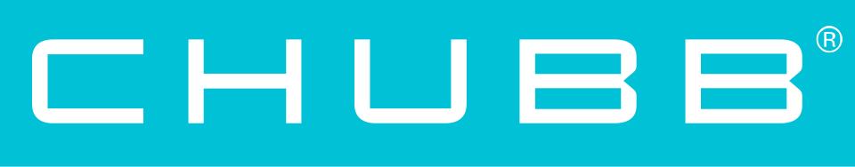
Chubb Corp.Chubb Corp.는 재산·상해보험을 중심으로 상해·건강보험, 재보험, 생명보험을 제공하는 미국·스위스계 글로벌 보험 브랜드이다.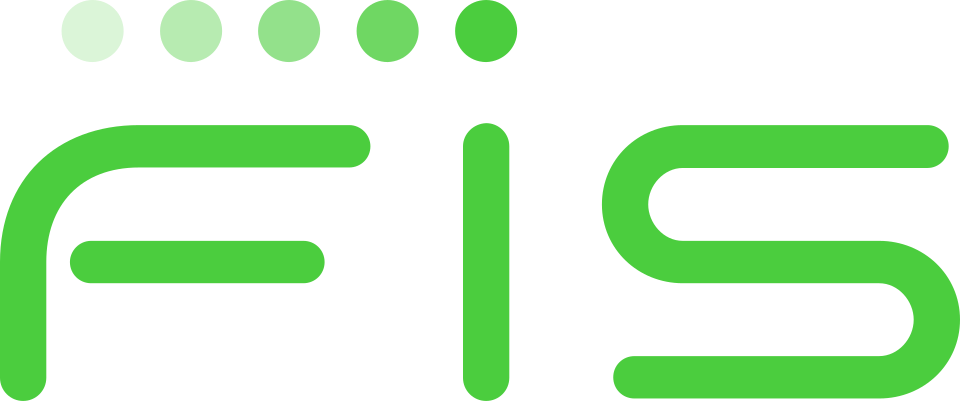
Fidelity National Information ServicesFidelity National Information Services는 은행과 결제 분야에 거래 처리 기술과 금융 서비스용 제품을 제공하는 미국 금융 기술…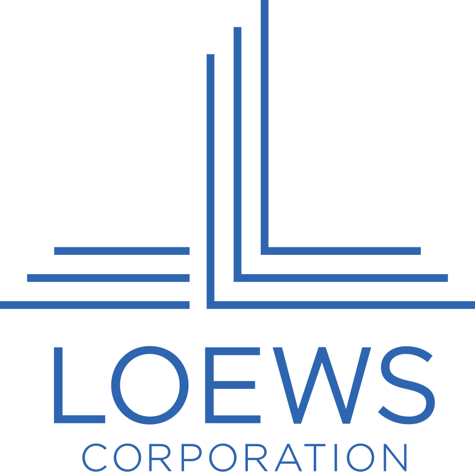
Loews CorporationLoews Corporation은 뉴욕에 본사를 둔 미국의 복합기업이다.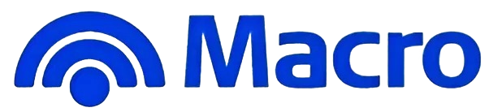
Macro BankMacro Bank는 아르헨티나 부에노스아이레스에 본사를 둔 민간 은행이다.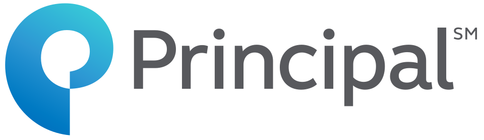
Principal Financial GroupPrincipal Financial Group은 미국 디모인에 본사를 둔 글로벌 금융 투자 관리·보험 기업이다.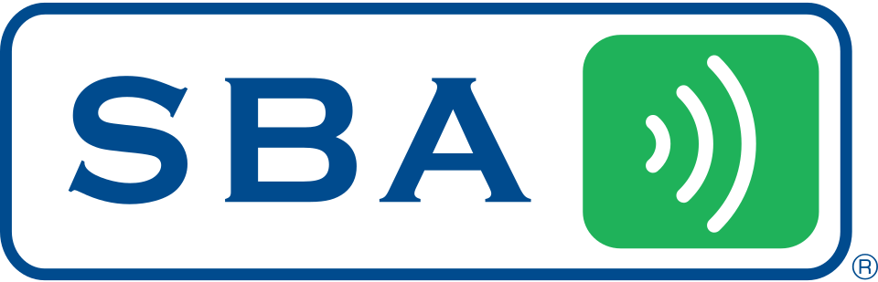
SBA CommunicationsSBA Communications는 미국, 캐나다, 중앙아메리카, 남아메리카, 남아프리카공화국에서 무선 인프라를 소유하고 운영하는 부동산투자신탁이다.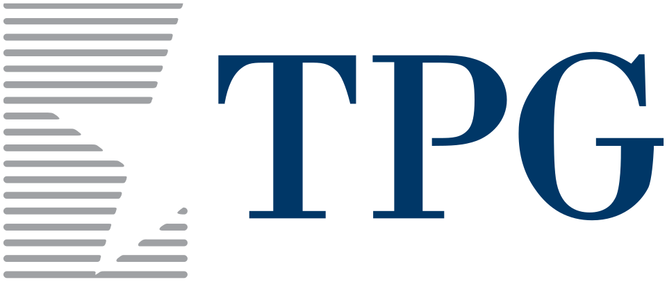
TPGTPG는 미국 텍사스주 포트워스에 본사를 둔 사모펀드 운용사이다.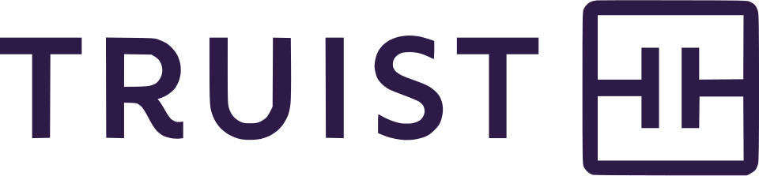
Truist FinancialTruist Financial은 소비자·상업·투자 은행 업무와 증권 중개, 자산 관리, 주택담보대출, 보험을 제공하는 미국 은행 지주회사이다.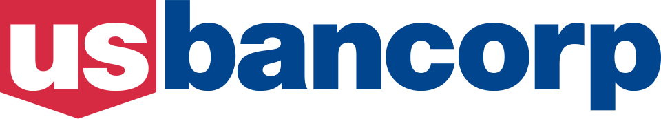
U.S. BancorpU.S. Bancorp는 미니애폴리스에 본사를 두고 델라웨어에 법인을 둔 미국의 다국적 은행 기관이다.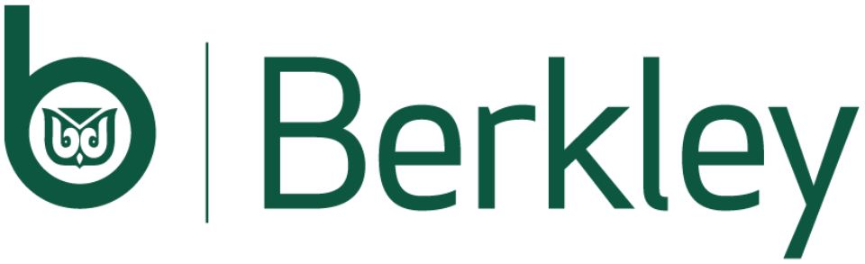
W. R. BerkleyW. R. Berkley는 델라웨어주에 조직을 두고 코네티컷주 그리니치에 본사를 둔 미국의 상업 보험 지주회사이다.WelltowerWelltower는 미국 털리도에 본사를 두고 헬스케어 인프라에 투자하는 부동산투자신탁이다.